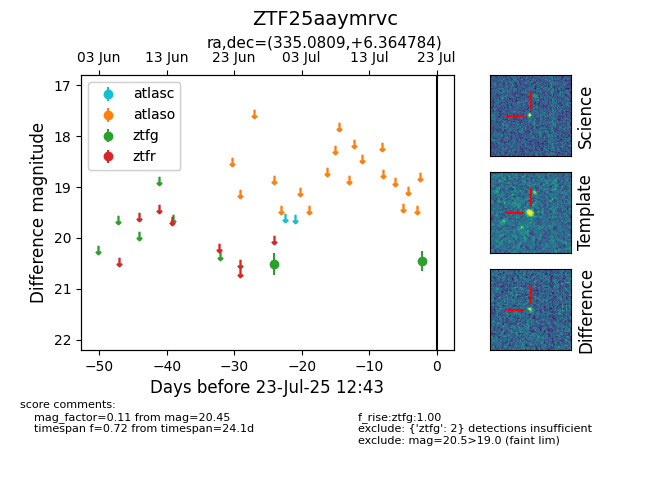

Target ZTF25aaymrvc at 2025-07-23 12:43, see:
FINK: fink-portal.org/ZTF25aaymrvc
Lasair: lasair-ztf.lsst.ac.uk/objects/ZTF25aaymrvc
ALeRCE: alerce.online/object/ZTF25aaymrvc
alt names
ZTF25aaymrvc (ztf,fink)
coordinates:
equatorial (ra, dec) = (335.0809,+6.36478)
galactic (l, b) = (69.8149,-40.43216)
photometry
last ztfg=20.45
2 ztfg detections
